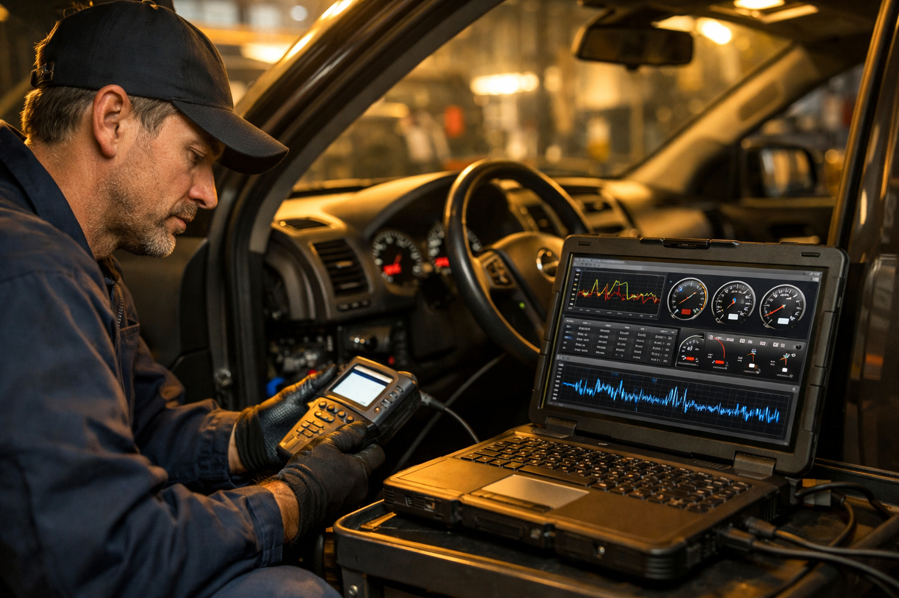
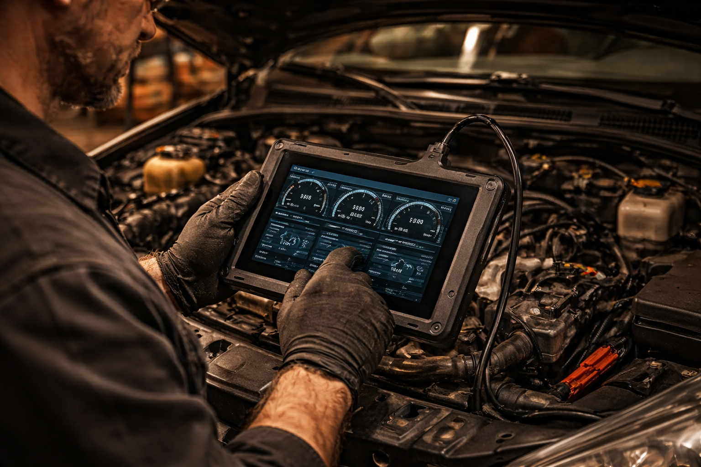

Diagnostic électronique professionnel pour identifier et résoudre les problèmes de votre moteur. Toutes marques, résultats rapides.

Un voyant moteur, c'est un peu comme de la fièvre : ça vous dit qu'il y a un problème, mais pas lequel. Le calculateur de votre voiture stocke des codes d'erreur — parfois un seul, parfois une dizaine — et sans l'outil adapté, impossible de savoir si c'est grave ou anodin. C'est exactement là que le diagnostic moteur entre en jeu chez Ali-Ka à Etterbeek.
Concrètement, on branche notre valise de diagnostic électronique sur la prise OBD de votre véhicule. En quelques minutes, on lit les codes défaut, on analyse les données en temps réel — pression, température, mélange air-carburant — et on croise tout ça avec nos 22 ans de terrain. Parce qu'un code d'erreur seul ne raconte jamais toute l'histoire. Si la température remonte trop haut, on vérifie immédiatement le circuit de refroidissement — un liquide dégradé provoque souvent des anomalies au diagnostic.
Notre atelier se trouve Avenue des Casernes 10, à deux pas du Parc du Cinquantenaire. Automobilistes d'Etterbeek, d'Ixelles, de Schaerbeek, de Woluwe-Saint-Lambert : vous êtes à quelques minutes d'un diagnostic fiable, sans surprise et sans jargon inutile.
Votre voiture vous parle. Pas avec des mots, mais avec des signaux. Le tout, c'est de les écouter avant qu'un petit souci ne devienne une grosse facture. Voici les situations où un passage au diagnostic s'impose :
Pensez-y : les trajets urbains à Bruxelles sont particulièrement durs pour un moteur. Embouteillages sur l'Avenue de Tervueren, stop-and-go autour de Schuman, manoeuvres incessantes dans les rues d'Etterbeek — tout cela accélère l'usure de certains capteurs et composants. D'après Autocontrôle, un voyant moteur allumé entraîne un refus automatique au contrôle technique. Un diagnostic préventif, c'est un investissement de quelques minutes qui peut vous épargner des centaines d'euros en réparations évitables.
Volkswagen, Audi, BMW, Mercedes, Renault, Peugeot, Citroën, Toyota, Hyundai, Kia — chaque constructeur a son propre langage électronique. Notre outil de diagnostic parle toutes les marques présentes sur les routes belges. Peu importe ce que vous conduisez, on peut le lire.
Vous habitez du côté de la Place Jourdan ? Près de la Gare d'Etterbeek ? Vous venez d'Auderghem ou de Woluwe-Saint-Pierre ? L'Avenue des Casernes 10 est à quelques minutes. Et si vous vous demandez « est-ce que mon modèle est pris en charge ? », la réponse est quasi toujours oui.
Et après le diagnostic ? Si une intervention s'avère nécessaire, tout se fait sous le même toit. Ali-Ka prend en charge la réparation de vos freins, les travaux sur votre direction et suspension, le remplacement de l'échappement, votre vidange ou encore la préparation au contrôle technique. Un diagnostic, un plan d'action, un seul garage à Etterbeek — pas besoin de courir ailleurs.
Un voyant moteur allumé peut indiquer différents problèmes. Rendez-vous chez Ali-Ka à Etterbeek pour un diagnostic électronique rapide. Nous lisons les codes défaut de votre calculateur et identifions la cause exacte.
Le diagnostic moteur chez Ali-Ka est proposé à un tarif compétitif, variable selon la complexité. Appelez le 02 647 47 01 pour en savoir plus.
Nous disposons d'équipements multimarques : Volkswagen, Renault, Peugeot, BMW, Mercedes, Audi, Toyota, Hyundai et toutes les autres marques courantes en Belgique.
La lecture des codes défaut prend 15 à 30 minutes. L'investigation approfondie peut prendre davantage selon la complexité. Nous vous tenons informé à chaque étape.
Un diagnostic moteur préventif avant le contrôle technique permet d'identifier et de résoudre les codes défaut qui entraîneraient un refus. Chez Ali-Ka à Etterbeek, nous recommandons cette vérification pour éviter les mauvaises surprises au centre d'inspection.